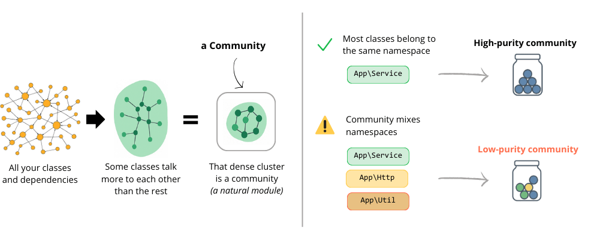

Communities - Help
Graph communities detected via label propagation on the dependency graph.

35
Number of detected communities (modules)
communities_count
0.20
Community separation quality (0–1)
modularity_q
4.8
Average number of nodes per community
avg_size
21
Largest community size (nodes)
max_size
0.029
Edge density of the dependency graph
graph_density
Graph view
Community
| node | namespace | boundary | in | out |
|---|
Legend
Size = nb of nodes
Color = top namespace
Edge thickness = nb of calls between communities
Red
ring = community contains critical nodes
Architecture
Export:
Layered dependency map
Legend: Size = nb nodes, Color = coupling ratio (green→red), Width =
calls
Sankey
Suggestions
Automatically inferred from coupling, purity and boundary nodes
- Tip Introduce façade for community screen_file_selection (coupling 75%)
- Tip Introduce façade for community open_metrics_generator (coupling 78%)
- Tip Introduce façade for community github.com/inancgumus/screen (coupling 88%)
- Tip Introduce façade for community sync/atomic (coupling 89%)
- Tip Introduce façade for community screen_home (coupling 86%)
- Tip Introduce façade for community self_update_command (coupling 73%)
- Tip Introduce façade for community json_report_generator (coupling 75%)
- Tip Introduce façade for community file_hash (coupling 71%)
- Tip Introduce façade for community visitor (coupling 80%)
- Tip Introduce façade for community unicode/utf8 (coupling 80%)
- Tip Introduce façade for community log (coupling 71%)
- Tip Introduce façade for community github.com/charmbracelet/bubbles/textinput (coupling 80%)
- Tip Introduce façade for community screen_summary (coupling 80%)
- Tip Refactor boundary node php_runner_test (boundary crossing)
- Tip Refactor boundary node cleaner (boundary crossing)
- Tip Refactor boundary node screen_table_class (boundary crossing)
- Tip Refactor boundary node clean_command_test (boundary crossing)
- Tip Refactor boundary node version_command (boundary crossing)
Critical nodes
articulation
boundary
Top 10 nodes by betweenness centrality.
Boundary nodes
php_runner_test
cleaner
screen_table_class
clean_command_test
version_command
self_update_command
screen_by_programming
html_report_generator
git_repository
screen_summary
component_statistics_overview
git_analyzer
configuration_loader_test
runner
git_repository_test
open_metrics_generator
rule_cyclomatic
mardown_report_generator
analyze_command_test
community_detection
file_hash
ast_dumper
finder
golang_runner
screen_html_report
python_runner
util
finder_test
component_search
tree_sitter_php
json_report_generator
component_class_table
halstead_metrics_visitor
screen_end
analyze_command
rule_volume_loc
aggregator_test
rust_runner
screen_file_selection
visitor
maintainability_index_visitor
ast_analyzer
requirements_evaluator_test
ruleset_show_command
php_self_static
version_command_test
ast_analyzer_test
rule_coupling
screen_home_test
screen_home
bus_factor_test
ruleset_add
styles
component_file_table
markdown_report_generator
php_runner
aggregator
command_watcher
Purity per community
| Community | Purity | Top namespace |
|---|---|---|
| github.com/elliotchance/orderedmap/v2 | 14.3% | time |
| markdown_report_generator | 20.0% | github.com/flosch/pongo2/v5 |
| screen_home | 50.0% | github.com/muesli/termenv |
| self_update_command | 25.0% | net/http |
| version_command_test | 50.0% | io |
| github.com/fsnotify/fsnotify | 50.0% | github.com/fsnotify/fsnotify |
| reflect | 20.0% | google.golang.org |
| github.com/evandro/slv/go | 50.0% | github.com/evandro/slv/go |
| json_report_generator | 50.0% | encoding/json |
| github.com/charmbracelet/bubbles/textinput | 50.0% | github.com/charmbracelet/bubbles/textinput |
| github.com/yargevad/filepathx | 50.0% | github.com/yargevad/filepathx |
| github.com/inancgumus/screen | 50.0% | github.com/inancgumus/screen |
| screen_file_selection | 50.0% | screen_file_selection |
| sync/atomic | 50.0% | sync/atomic |
| rule_coupling | 25.0% | regexp |
| screen_summary | 50.0% | github.com/charmbracelet/glamour |
| github.com/stretchr/testify/assert | 4.8% | golang_operators_test |
| bufio | 50.0% | bufio |
| sync | 20.0% | version_command |
| unicode/utf8 | 50.0% | unicode/utf8 |
| math | 25.0% | halstead_metrics_visitor |
| github.com/charmbracelet/bubbletea | 14.3% | screen_by_programming |
| file_hash | 33.3% | encoding/hex |
| gopkg.in.yaml | 25.0% | errors |
| math/rand | 33.3% | math/rand |
| github.com/charmbracelet/bubbles/table | 7.1% | community_aggregator |
| workdir | 50.0% | github.com/google/uuid |
| open_metrics_generator | 33.3% | github.com/bsm/openmetrics |
| sort | 33.3% | bus_factor |
| log | 33.3% | git_repository |
| lang_adapter | 5.3% | github.com/smacker/go/tree |
| io/ioutil | 33.3% | io/ioutil |
| github.com/pterm/pterm | 20.0% | clean_command |
| github.com/halleck45/ast/metrics | 6.7% | registry |
| visitor | 50.0% | visitor |
Communities
| id | size | density | purity | inbound_edges | outbound_edges | coupling | criticality_rank | top_namespaces | top_classes | action_hints |
|---|---|---|---|---|---|---|---|---|---|---|
| bufio | 2 | - | 0.0% | 0 | 0 | - | - | bufio | bufio, analyze_command_test | |
| json_report_generator | 2 | - | 0.0% | 0 | 0 | - | - | encoding/json | encoding/json, json_report_generator | |
| log | 3 | - | 0.0% | 0 | 0 | - | - | git_repository | git_repository, log, os/exec | |
| sync | 5 | - | 0.0% | 0 | 0 | - | - | version_command | version_command, runtime, sync, ast_dumper, aggregator | |
| github.com/fsnotify/fsnotify | 2 | - | 0.0% | 0 | 0 | - | - | github.com/fsnotify/fsnotify | github.com/fsnotify/fsnotify, command_watcher | |
| gopkg.in.yaml | 4 | - | 0.0% | 0 | 0 | - | - | errors | errors, ruleset_add, gopkg.in.yaml, configuration_loader | |
| math/rand | 3 | - | 0.0% | 0 | 0 | - | - | math/rand | math/rand, community_detection, slices | |
| github.com/charmbracelet/bubbles/table | 14 | - | 0.0% | 0 | 0 | - | - | community_aggregator | golang_runner, component_class_table, community_aggregator, github.com/charmbracelet/lipgloss, component_file_table | |
| lang_adapter | 19 | - | 0.0% | 0 | 0 | - | - | github.com/smacker/go/tree | rust_runner, runner, tree_sitter_rust, workdir_test, github.com/smacker/go/tree | |
| github.com/charmbracelet/bubbles/textinput | 2 | - | 0.0% | 0 | 0 | - | - | github.com/charmbracelet/bubbles/textinput | component_search, github.com/charmbracelet/bubbles/textinput | |
| reflect | 5 | - | 0.0% | 0 | 0 | - | - | google.golang.org | bus_factor_test, NodeType.pb, cleaner, reflect, google.golang.org | |
| io/ioutil | 3 | - | 0.0% | 0 | 0 | - | - | io/ioutil | configuration_loader_test, io/ioutil, mardown_report_generator | |
| screen_summary | 2 | - | 0.0% | 0 | 0 | - | - | github.com/charmbracelet/glamour | github.com/charmbracelet/glamour, screen_summary | |
| github.com/evandro/slv/go | 2 | - | 0.0% | 0 | 0 | - | - | github.com/evandro/slv/go | github.com/evandro/slv/go, component_barchart | |
| github.com/yargevad/filepathx | 2 | - | 0.0% | 0 | 0 | - | - | github.com/yargevad/filepathx | github.com/yargevad/filepathx, finder | |
| github.com/inancgumus/screen | 2 | - | 0.0% | 0 | 0 | - | - | github.com/inancgumus/screen | github.com/inancgumus/screen, analyze_command | |
| github.com/pterm/pterm | 5 | - | 0.0% | 0 | 0 | - | - | clean_command | clean_command, init_configuration_command, engine, github.com/pterm/pterm, ruleset_list_command | |
| unicode/utf8 | 2 | - | 0.0% | 0 | 0 | - | - | unicode/utf8 | unicode/utf8, tree_sitter_php | |
| screen_file_selection | 2 | - | 0.0% | 0 | 0 | - | - | screen_file_selection | screen_file_selection, github.com/charmbracelet/bubbles/filepicker | |
| github.com/stretchr/testify/assert | 21 | - | 0.0% | 0 | 0 | - | - | golang_operators_test | reporters_factory_test, php_self_static, loc_visitor_test, aggregator_test, github.com/stretchr/testify/assert | |
| sync/atomic | 2 | - | 0.0% | 0 | 0 | - | - | sync/atomic | sync/atomic, ast_analyzer | |
| github.com/charmbracelet/bubbletea | 7 | - | 0.0% | 0 | 0 | - | - | screen_by_programming | github.com/charmbracelet/bubbletea, screen_risks, component, screen, screen_end | |
| file_hash | 3 | - | 0.0% | 0 | 0 | - | - | encoding/hex | file_hash, crypto/md5, encoding/hex | |
| rule_coupling | 4 | - | 0.0% | 0 | 0 | - | - | regexp | regexp, rule_coupling, rule_volume_loc, rule_cyclomatic | |
| github.com/elliotchance/orderedmap/v2 | 7 | - | 0.0% | 0 | 0 | - | - | time | time, component_barchart_cyclomatic, component_line_chart, github.com/elliotchance/orderedmap/v2, util | |
| github.com/halleck45/ast/metrics | 15 | - | 0.0% | 0 | 0 | - | - | registry | ruleset_architecture, registry, ruleset_volume, node_type_ensurer, loc_visitor | |
| workdir | 2 | - | 0.0% | 0 | 0 | - | - | github.com/google/uuid | github.com/google/uuid, workdir | |
| open_metrics_generator | 3 | - | 0.0% | 0 | 0 | - | - | github.com/bsm/openmetrics | github.com/bsm/openmetrics, open_metrics_generator, bytes | |
| math | 4 | - | 0.0% | 0 | 0 | - | - | halstead_metrics_visitor | maintainability_index_visitor, halstead_metrics_visitor, risk_analyzer, math | |
| sort | 3 | - | 0.0% | 0 | 0 | - | - | bus_factor | graph_aggregator, bus_factor, sort | |
| visitor | 2 | - | 0.0% | 0 | 0 | - | - | visitor | visitor, github.com/golang/protobuf/proto | |
| markdown_report_generator | 5 | - | 0.0% | 0 | 0 | - | - | github.com/flosch/pongo2/v5 | github.com/sirupsen/logrus, github.com/flosch/pongo2/v5, markdown_report_generator, embed, html_report_generator | |
| screen_home | 2 | - | 0.0% | 0 | 0 | - | - | github.com/muesli/termenv | github.com/muesli/termenv, screen_home | |
| self_update_command | 4 | - | 0.0% | 0 | 0 | - | - | net/http | self_update_command, github.com/minio/selfupdate, github.com/jarcoal/httpmock, net/http | |
| version_command_test | 2 | - | 0.0% | 0 | 0 | - | - | io | io, version_command_test |